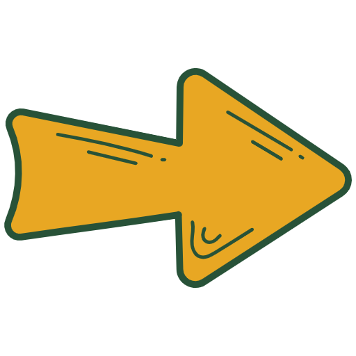

Wasserkraft
Es ist toll, dass du mehr über Wasserkraft erfahren möchtest!
Diese Art von Energie ist sehr wichtig, weil sie uns hilft, die Umwelt zu schützen und saubere Energie zu nutzen, die immer wieder erneuert wird – so wie der Fluss des Wassers!

Hier gibt es viele Informationen rund um das Thema Wasserkraft!
Es gibt einiges zu lernen, also viel Spaß beim Stöbern und Forschen!
Was ist Wasserkraft?
Wasserkraft
ist eine besondere Art von Energie, die wir aus Wasser bekommen. Wenn Wasser fließt oder von oben herab fällt, nutzt man diese Bewegung, um Strom zu machen.
Das fließende Wasser dreht spezielle
Turbinen
– das sind große, sich drehende Räder. Diese Turbinen drehen sich und machen einen
Generator
an. Der Generator verwandelt die Bewegung in
Strom,
den wir für viele Dinge wie Licht und Fernsehen nutzen können.
Was sind Wasserkraftwerke?
Wasserkraftwerke nutzen das fließende Wasser, um Strom zu erzeugen. Sie bestehen aus einem
Staudamm, der das Wasser speichert und kontrolliert in eine
Turbine leitet. Die Turbine wird durch das fließende Wasser in Bewegung gesetzt und dreht sich. Diese Bewegung der Turbine treibt einen
Generator
an, der den Strom erzeugt.
Wasserkraftwerke werden in Gebieten gebaut, wo es viel fließendes Wasser gibt, wie in
Flüssen
oder an
Wasserfällen.
Der fließende Wasserstrom gibt die nötige Energie, um die Turbinen zu drehen und Strom zu erzeugen.
Wie hilft Wasserkraft der Umwelt?
Wasserkraft ist gut für die Umwelt, weil sie keine
Luftverschmutzung
verursacht und keine schädlichen
Treibhausgase
in die Luft schickt. Stattdessen nutzt sie die
Kraft des Wassers,
das in Flüssen oder Stauseen fließt, um Strom zu erzeugen. Und das ganz sauber, ohne
Abfälle
oder
Verunreinigungen
zu hinterlassen!
Wenn wir Wasserkraft nutzen, brauchen wir viel weniger
Rohstoffe
wie Kohle oder Gas, die die Erde belasten.
Aber es ist wichtig, dass Wasserkraftwerke die
Natur
so wenig wie möglich beeinträchtigen. Das bedeutet, dass wir auf Dinge wie den Schutz von Fischwanderungen und die Erhaltung von Ökosystemen achten müssen, um den Flüssen und Tieren zu helfen!
Welche Orte eignen sich für Wasserkraftwerke?
Wasserkraft funktioniert besonders gut an Orten, wo viel Wasser fließt. Zum Beispiel in großen
Flüssen,
die sich super eignen, um Strom zu erzeugen, weil das Wasser schnell fließt. Auch in
Stauseen
kann man Wasserkraft nutzen. Dort wird das Wasser gestaut und dann so abgelassen, dass es Strom produziert.
An der
Küste
kann man auch die Kraft der Gezeiten nutzen, wenn das Wasser durch das Hin- und Herbewegen Strom erzeugt. Und in
Gebirgen
fließen die Flüsse oft besonders schnell, was für die Wasserkraft auch super ist.
Aber an trockenen Orten,
wo kaum Wasser fließt, funktioniert Wasserkraft leider nicht. Auch in Gebieten ohne Flüsse oder Stauseen ist es schwierig, ein Wasserkraftwerk zu bauen.